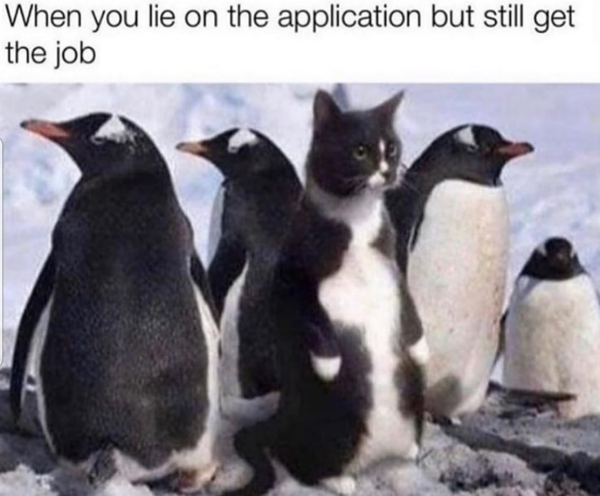
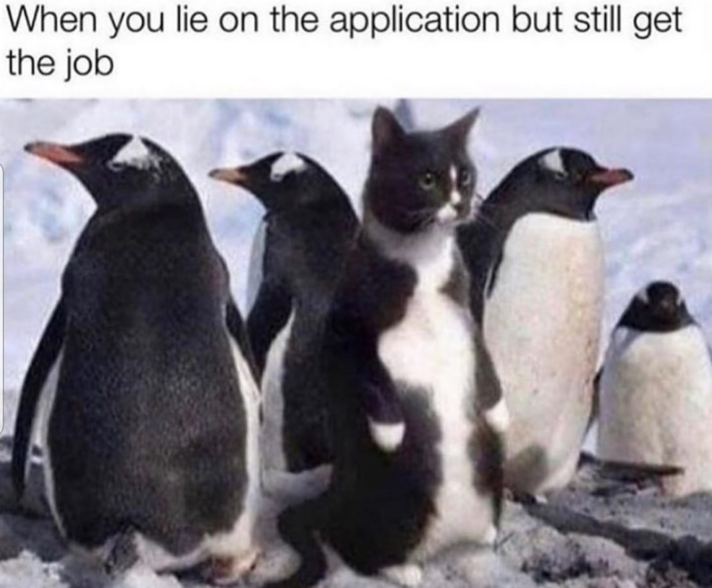

Det är en hel del.
Alla dumheter vi hittar på som krig, misär, orättvisor är på något märkligt sätt en trigger för inspiration. Det får mig att vilja engagera mig mer och utvecklas för att kunna bidra till att skapa den värld jag skulle vilja besöka. För att fokusera på roligare saker att inspireras av så är det främst alla människors många sätt att utmana kropp och själ, intellekt, dum och lekfullhet.

 
